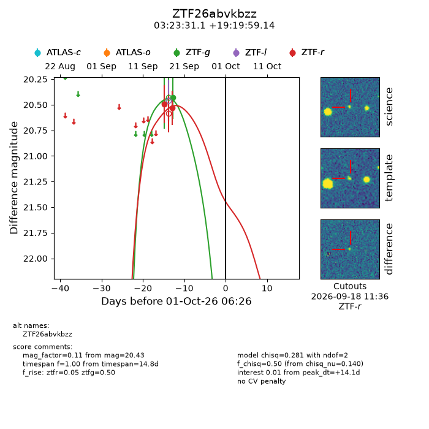
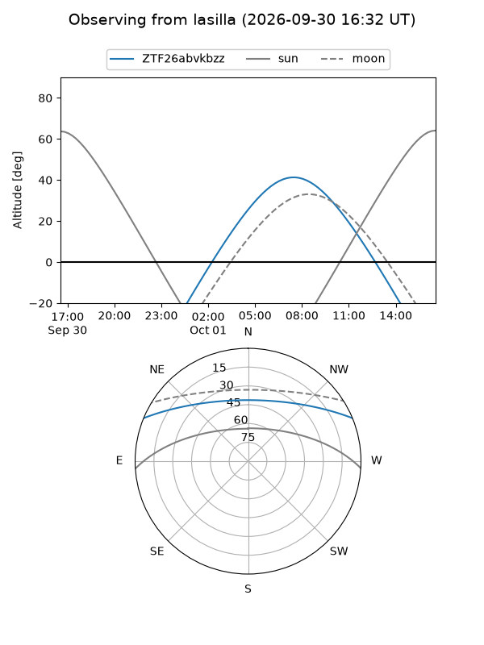
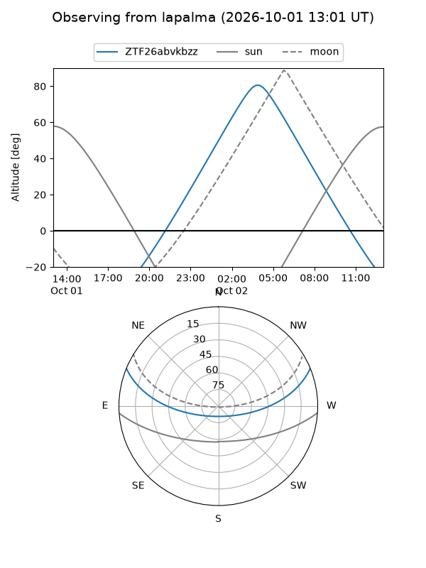
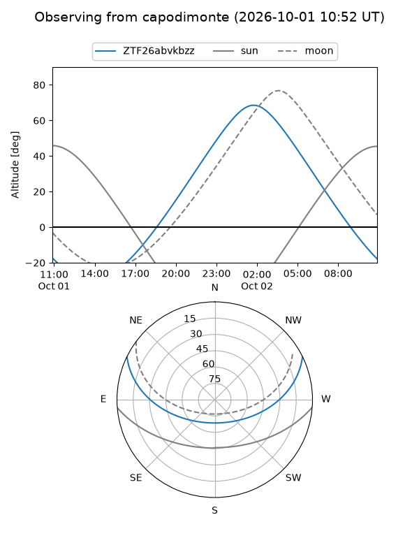
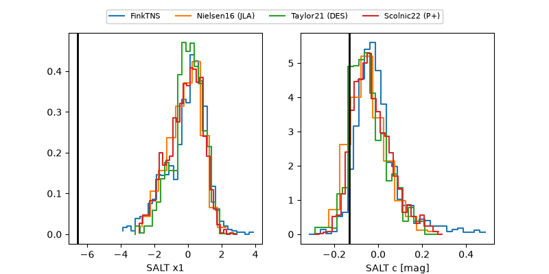

ZTF26abvkbzz
Target ZTF26abvkbzz at 2026-10-01 17:38
Aliases and brokers:
FINK-ZTF: ztf.fink-portal.org/ZTF26abvkbzz
Lasair-ZTF: lasair-ztf.lsst.ac.uk/objects/ZTF26abvkbzz
ALeRCE-ZTF: alerce.online/object/ZTF26abvkbzz
Direct TNS query: direct search
alt names
ZTF26abvkbzz (ztf,fink_ztf)
Coordinates:
equatorial (ra, dec) = 50.8795,+19.33309
equatorial (HMS+DMS) = 03:23:31.07,+19:19:59.14
galactic (l, b) = (165.4620,-30.70609)
Flags:
peak dt: +14.5
Photometry:
last ztfg=20.43, ztfr=20.53
1 ztfg, 2 ztfr detections
Lightcurve

Visibility



Additional plots
